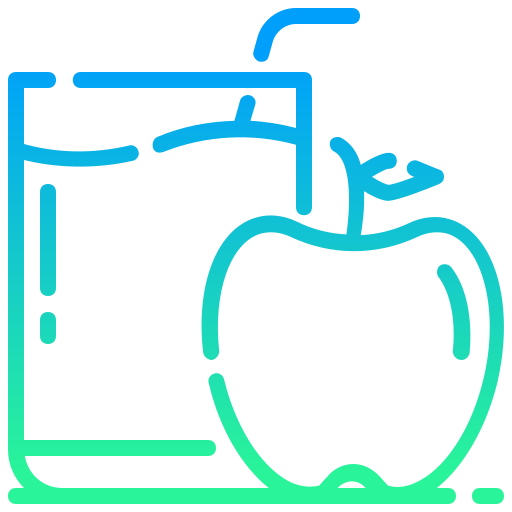

- Ceki Atmaq Üçün
- Son 30 Gün!

Arıqlamaq üçün reseptlər – Qara gavalı qurusu ilə borş
Kələm, çuğundur və soğanı uzunsov, nazik doğrayın. Tərəvəzləri qazana yığıb, kərə yağı
və su əlavə edin. Ərzaqlar yumşalana qədər bişirin. Ardınca qazana istədiyiniz
miqdarda su tökün. Gavalı qurusunu yaxşıca yuyub, suda
qaynadın. Borşun içinə
gavalıları suyu ilə birlikdə tökün. Bir az da bişirib, qazın altını söndürün. Süfrəyə
verdikdə üzərinə xama qoya bilərsiniz.